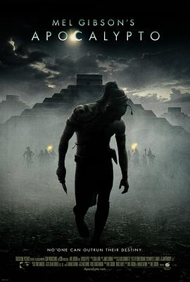

启示 / Apocalypto
又名：启示录 / 阿波卡猎逃(台) / 毁天灭地
感觉从头到尾都在跑步，镜头也无比晃，带着历史的眼光来看应该可以给4分，但是我感觉比例有点少，不是很感兴趣
作品信息
| 导演 | 梅尔·吉布森 |
| 编剧 | 梅尔·吉布森 / 法尔哈德·撒夫尼亚 |
| 主演 | 鲁迪·杨布拉德 / 达利娅·埃尔南德斯 / 乔纳森·布雷维尔 / 莫里斯·博德耶洛海德 / 劳尔·特鲁希洛 / 赫拉多·塔拉塞纳 / 卡洛斯·伊米里奥·巴厄兹 / 阿米尔卡尔·拉米瑞兹 / 伊斯雷尔·康特雷拉斯 / 伊斯雷尔·里奥斯 / 玛利亚·迪亚兹 / 埃斯皮里迪恩·阿科斯塔·卡奇 / 梅拉·萨布罗 / 伊阿祖娅·拉里奥斯 / 艾贝尔·伍尔里奇 |
| 类型 | 剧情 / 动作 / 冒险 |
| 制片国家/地区 | 美国 |
| 语言 | 玛雅语 |
| 上映日期 | 2006-12-08(美国) |
| 片长 | 139分钟 |
| IMDb | tt0472043 |
说过什么
2018-12-02 12:11:54
看过 · 时间来自广播，短评来自标记页
感觉从头到尾都在跑步，镜头也无比晃，带着历史的眼光来看应该可以给4分，但是我感觉比例有点少，不是很感兴趣
2017-04-24 19:34:03
广播 · 想看
最后一次看到是 2026-08-01T11:05:59+10:00 · 豆瓣原页